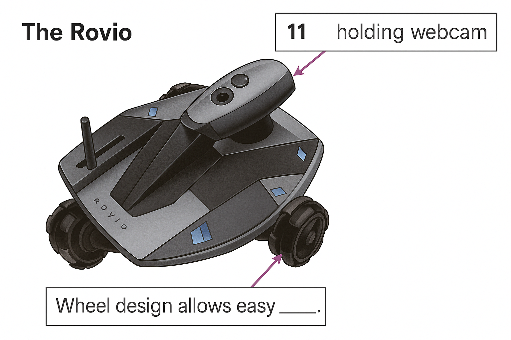

Domestic robots
Machines that look after your home are getting cleverer, but they still need care and attention if they are to perform as intended.
Floor-cleaning machines capable of responding to their environment were among the first commercially available domestic products worthy of being called robots. The best known is the Roomba, made by iRobot, an American company which has sold more than three million of the disc-shaped, frisbee-sized vacuuming robots. The latest model, the fifth version of the Roomba, has more sensors and cleverer software than its predecessors. Press the ‘Clean’ button and the robot glides out of its docking station and sets off across the floor.
Domestic robots are supposed to free up time so that you can do other things, but watching how the Roomba deals with obstacles is strangely compelling. It is capable of sensing its surroundings, and does not simply try to adhere to a pre-planned route, so it is not upset if furniture is moved, or if it is picked up and taken to clean another room. Its infra-red sensors enable it to slow down before reaching an obstacle – such as a dozy cat – changing direction and setting off again.
It steadily works its way around the room, figuring out how to get out from under the television stand or untangle itself from a stray Game Boy recharging lead. Watch it for long enough, and you can sometimes predict its next move. The machine has a ‘dirt sensor’ and flashes a blue light when it finds things to clean up. Only when it detects no more dirt does it stop going over the same area and, eventually, conclude that the whole room is clean. It then trundles back to dock at its recharging station.
So the first observation of life with a domestic robot is that you will keep watching it before you trust it completely. Perhaps that is not surprising: after all, when automatic washing machines first appeared, people used to draw up a chair and sit and watch them complete their wash, rinse and spin cycles. Now they just load them, switch them on and leave them to it.
The second observation is that, despite their current level of intelligence, certain allowances must be made to get the best out of a domestic robot. The Roomba can be set up to clean at particular times, and to clean more than one room (small infra-red ‘lighthouses’ can be positioned in doorways, creating an invisible barrier between one room and the next that is only removed when the first room has been cleaned). A ‘drop-off’ sensor underneath the robot prevents it from falling down stairs. All very clever, but what the Roomba will not do is pick up toys, shoes and other items left lying around. Rooms cared for by robots must be kept tidy. To start with, children will happily put things away in order to watch the robot set off, but unfortunately the novelty soon wears off.
Similar allowances must be made for other domestic robots. Sweden’s Husqvarna recently launched a new version of its Automower lawn mowing robot. Before it can be used, a wire must be placed around the perimeter of the lawn to define the part to be cut. If toys and other obstacles are not cleared from the lawn before it starts work, the robot will steer around them, leaving uncut areas. However, the latest version can top up its batteries with solar power, or send its owner a text message if it gets into trouble trying to climb a mole-hill.
But there is still only a limited range of domestic robots. Machines that mop the floor, clean a swimming pool and clear muck from guttering are made by iRobot. Several surveillance robots are also on offer. The Rovio, made by WowWee of Hong Kong, is a wi-fi-enabled webcam, mounted on an extending arm, which rides along smoothly on a nimble set of three wheels. Its movement can be remotely operated over the Internet via a laptop or mobile phone. The idea is that Rovio can patrol the home when its owner is away, either automatically or under manual control: in the latter case, two-way communication allows the operator to see and talk via the machine. So you could, for instance, shout at the cat if it is sleeping on your best sofa.
Some machines are called robots even though they cannot move around. There is an ironing robot, for instance, that resembles an inflatable dummy: put a damp shirt on it, and it puffs up to remove the creases. Similarly, there are elaborate trouser presses that aspire to be robots. But do these devices really count as robots? If so, then surely dishwashers and washing machines do, too.
Yet whatever shape or size robots come in, many will be adored. Another important observation from living with a robot is that it tends to become part of the family. ‘People give them names, and if they have to be sent back for repair, they carefully add a mark to them to ensure they get the same machine back,’ says Nancy Dussault Smith of iRobot.
Questions 1–6
Do the following statements agree with the information given in Reading Passage 1?
Write TRUE, FALSE, or NOT GIVEN
Questions 7–10
Answer the questions below.
Use NO MORE THAN THREE WORDS from the passage for each answer.
Questions 11–13
Label the diagram below.
Choose NO MORE THAN THREE WORDS from the passage for each answer.
- holding webcam
- Wheel design allows easy
- Manual controls give homeowner with robot